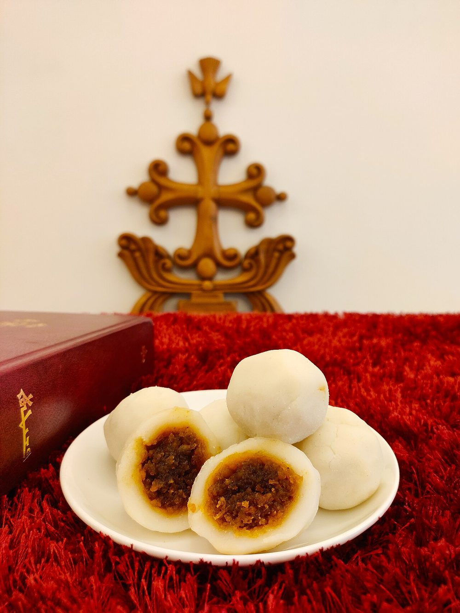

Allergens: none of the ten listed below
Checked against the ingredient list for milk, egg, fish, crustaceans, tree nuts, peanuts, sesame, mustard, soy and gluten. Nothing else is checked, and brands vary, so read the label on anything you have not bought before.
Ingredients
Quantities for 4.
- 200g, fine roasted rice flour Rice Flourthe roasted kind sold as puttu podi gives the smoothest dough
- 400ml Water
- 1.5 cups grated, fresh Coconut
- 150g, grated or chopped small Jaggerydark jaggery gives a better colour
- 4 pods, seeds crushed Cardamom
- 1/4 tsp Cumin Seedstraditional in the filling and worth keepingoptional
- 1 tbsp, plus extra for your palms Coconut Oil
- 1/2 tsp Salt
Cookware
stovetop, steamer
Before you start
- Grate the coconut and jaggery before you start. Once the dough is made it must be shaped while warm.
- Keep a small bowl of coconut oil beside you for greasing your palms as you shape.
- Have the steamer full and already at a rolling boil before the dumplings are formed, so they go straight in.
Method
- Make the filling first: melt the jaggery with 3 tbsp water in a pan over medium heat until it dissolves into a syrup, about 4 minutes, then strain out any grit.
- Return the syrup to the pan, add the grated coconut, crushed cardamom and cumin seeds, and cook 6-8 minutes, stirring, until the mixture pulls away from the sides and holds its shape when pressed.Stop while it is still slightly moist. Cooked too dry, the filling turns hard and sandy inside the dumpling.
- Spread the filling on a plate to cool completely.
- Bring the 400ml water to a full boil with the salt and 1 tbsp coconut oil.
- Take the pan off the heat and tip in the rice flour all at once, stirring hard with a wooden spoon until no dry flour remains and the mass comes together.All the flour at once, off the heat. Sprinkling it in gradually gives you lumps you will never work out.
- Cover and leave 5 minutes, then knead the warm dough with oiled palms for 3-4 minutes until it is completely smooth and does not crack when you press a ball flat.Knead it as hot as you can bear. Cold dough cracks open in the steamer and spills the filling.
- Divide the dough into 14-16 balls, keeping the rest covered with a damp cloth while you work.
- Flatten each ball into a 7cm disc in your oiled palm, place a heaped teaspoon of filling in the middle, and gather the edges up over it, sealing and rolling into a smooth ball.
- Arrange the dumplings in a greased steamer basket with space between them.
- Steam over rapidly boiling water for 10-12 minutes, until the surface turns glossy and slightly translucent.The shift from matte to shiny is the doneness cue. Overcooked kozhukatta go gummy.
- Rest 5 minutes before lifting them out. Straight from the steamer they tear.
Storage
Best the day they are made. Keep 2 days refrigerated in an airtight box and re-steam 5 minutes to soften; they harden badly in the fridge and do not revive in a microwave.
Nutrition Good estimate
| Per serving122 g | Per 100 g | |
|---|---|---|
| Calories | 466+ kcal | 382+ kcal |
| Protein | 4.0+ g | 3+ g |
| Carbohydrate | 82.2+ g | 67+ g |
| of which sugars | 39.4+ g | 32+ g |
| Fibre | 3.9+ g | 3+ g |
| Fat | 14.2+ g | 12+ g |
| of which saturated | 11.9+ g | 10+ g |
| of which unsaturated | 1.3+ g | 1+ g |
The + means ingredients given to taste rather than by weight are counted as zero, so the true figure is a little higher than shown. Worked out from the listed quantities; most of the ingredient list could be weighed. Ingredients given to taste rather than by weight are counted as zero, so the real figure is a little higher than this. The + says so. Some ingredients have no exact match in the nutrient database and use the nearest equivalent: jaggery. Estimated from raw ingredients using USDA FoodData Central. Cooking changes are not modelled, and added salt is excluded, so sodium is not given.
Written and checked against sources, not cooked in a test kitchen. Times, yields and keeping times are guides, and the allergen and nutrition figures are worked out from the ingredient list rather than measured. Use your own judgement, particularly on doneness and on anything you are storing or reheating. More in About.